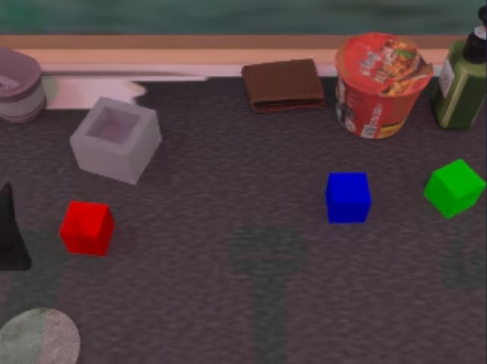
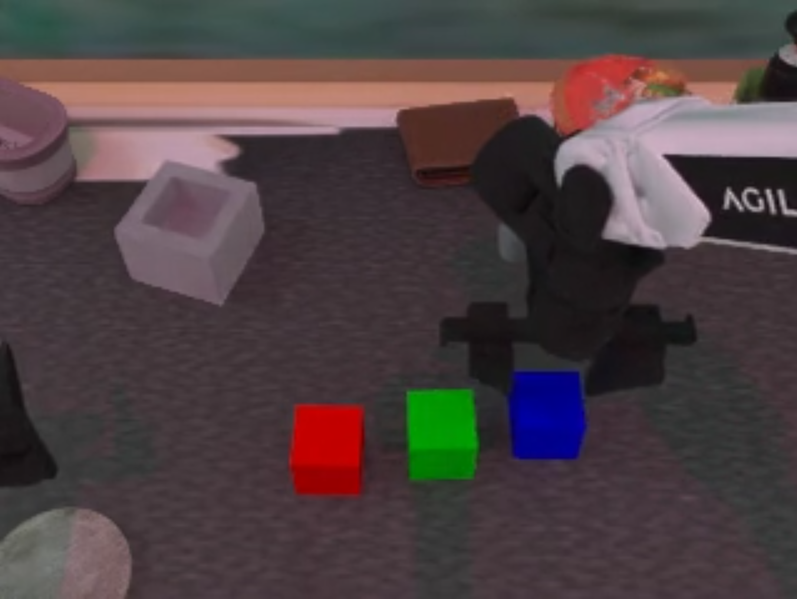
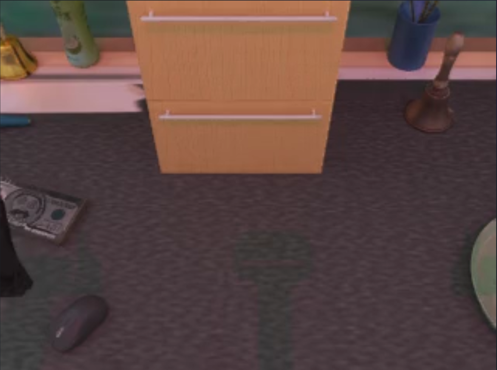
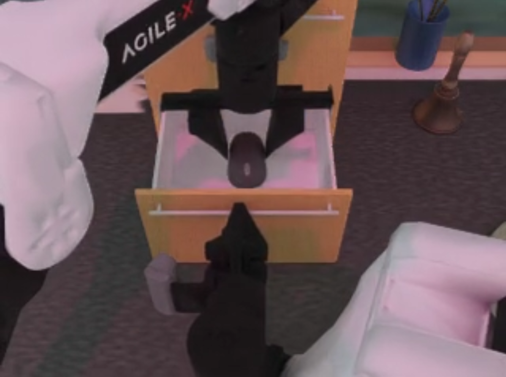

CV Course Project (Advisor: Yonglu Li) · RoboTwin · π0
Ji Zeng · Chuxi Wu · Zixi Chen
Presentation split: Chuxi (1–6) · Zixi (7–8) · Ji (9–12)
Goal: isolate the effect of hierarchy on long-horizon execution.
Two factors we analyze:
We’re not claiming a perfect planner—just exposing the potential of hierarchical VLA.
Rubrics (inference prompting)
Prompt (baseline):
First, place red block on the far left, then green block in the middle, and finish with blue block on the right.
Prompt (split):
Move the red block to the left position
Models (training)
Flat VLA (end-to-end)
Hierarchical VLA
Task 1: blocks ranking rgb
Move multiple blocks to multiple targets.
Task 2: put object cabinet
Grasp + place into cabinet.




π0 training
RoboTwin evaluation
| Baseline rubric (full prompt) |
Split rubric (oracle subtasks) |
|
|---|---|---|
| pi0-base (no finetune) |
45.4% | 47.6% |
| pi0-split (subtask finetune) |
35.6% | 53.8% (+8.4) |
Best = split rubric + subtask finetuning → improved long-horizon stability.
| Baseline rubric | Split rubric | |
|---|---|---|
| pi0-base | 31.2% | 31.0% |
| pi0-split | 28.0% | 27.8% |
Limitations
Next
Thank you.